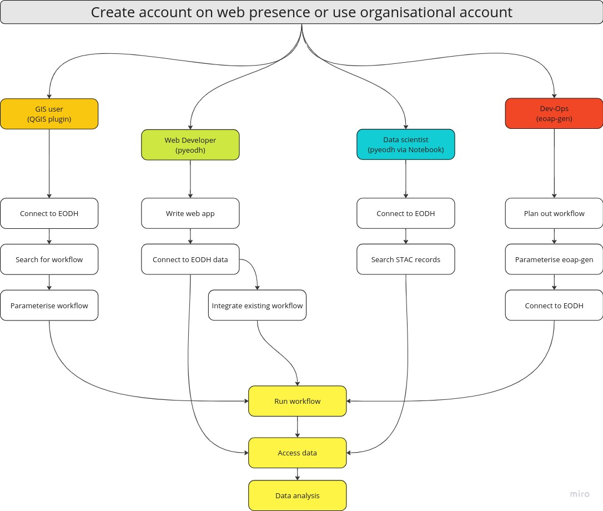

The EO Data Hub
Description & purpose: This webpage is designed to provide an introduction to the idea behind the Hub and borrows text from the EODH test server ‘About’ page. It also outlines the potential user journey that different practitioners might take.
Author(s): Alastair Graham
Date created: 2024-10-23
Date last modified: 2024-12-17
Licence: This file is licensed under Creative Commons Attribution-ShareAlike 4.0 International. Any included code is released using the BSD-2-Clause license.
Copyright (c) , All rights reserved.
Redistribution and use in source and binary forms, with or without modification, are permitted provided that the following conditions are met:
Redistributions of source code must retain the above copyright notice, this list of conditions and the following disclaimer. Redistributions in binary form must reproduce the above copyright notice, this list of conditions and the following disclaimer in the documentation and/or other materials provided with the distribution. THIS SOFTWARE IS PROVIDED BY THE COPYRIGHT HOLDERS AND CONTRIBUTORS “AS IS” AND ANY EXPRESS OR IMPLIED WARRANTIES, INCLUDING, BUT NOT LIMITED TO, THE IMPLIED WARRANTIES OF MERCHANTABILITY AND FITNESS FOR A PARTICULAR PURPOSE ARE DISCLAIMED. IN NO EVENT SHALL THE COPYRIGHT HOLDER OR CONTRIBUTORS BE LIABLE FOR ANY DIRECT, INDIRECT, INCIDENTAL, SPECIAL, EXEMPLARY, OR CONSEQUENTIAL DAMAGES (INCLUDING, BUT NOT LIMITED TO, PROCUREMENT OF SUBSTITUTE GOODS OR SERVICES; LOSS OF USE, DATA, OR PROFITS; OR BUSINESS INTERRUPTION) HOWEVER CAUSED AND ON ANY THEORY OF LIABILITY, WHETHER IN CONTRACT, STRICT LIABILITY, OR TORT (INCLUDING NEGLIGENCE OR OTHERWISE) ARISING IN ANY WAY OUT OF THE USE OF THIS SOFTWARE, EVEN IF ADVISED OF THE POSSIBILITY OF SUCH DAMAGE.
EODH Introduction
The overall goal of the Earth Observation Data Hub (EODH) project is to develop and operate a new centralised software infrastructure – the Hub – to provide a ‘single point’ of access for UK Earth Observation (EO) data obtained from distributed sources, to include public and commercial centres.
By providing this single point of access, the objective is to provide a standard common set of services and APIs upon which new EO services and tools can be developed and accessed by the UK EO data community. The project is currently in a Pathfinder phase (2023-2025) that brings new thinking and experimental developments to bear, resulting in practical services for a variety of users in a short period of time.
By the end of the pathfinder phase (March 2025), it is expected that there will be a community of researchers, industry and government users working together to provide and intereact with EO data in new and innovative ways.
Example User Journeys
The journey through the technology made accessbile by the Hub will be different depending on the needs of the user. The following diagram presents a simplified and high level route for four different user types: * a GIS user who spends most of their working time in QGIS * a web application developer, interested in hooking into the processing power of the EODH and the associated datasets * a data scientist, who will use code in a Jupyter notebook to process different spatial datasets * a dev-ops specialist, tasked with creating and maintaining data services hosted on the EODH

The concepts of the AppHub and its associated notebook service, workflows, data collections and the Resource Catalogue, and account access are all covered in other sections of these training materials.